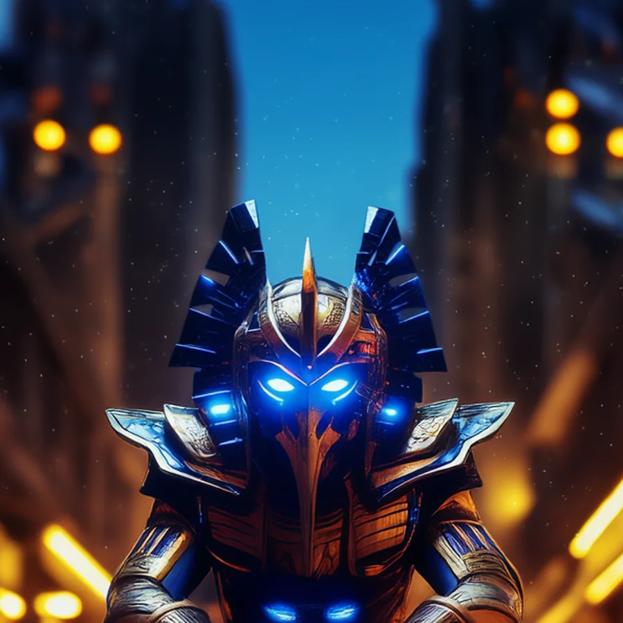

©
©

Belek
Eternal Custodian · Legion
Belek designed the watch the Eternal Custodian keeps over the Threshold. The Dimensional Warp bends space around the whole field, emptying every enemy's energy and striking all of them. If the portal ever opens fully, Belek is the one the Custodians expect to close it.